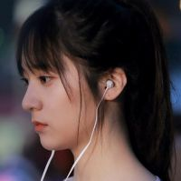

澄鱼FE
关于团队的介绍
郑秀晶（Krystal），1994年10月24日出生于美国加利福尼亚州旧金山，韩国女歌手、演员，女子演唱组合f(x)成员。
2000年，6岁的郑秀晶被星探发掘。2006年，12岁的她正式进入SM公司成为旗下练习生。2009年郑秀晶以演唱组合f(x)成员出道，担任主唱及领舞职务。2010年首次出演电视剧《越看越可爱》，并凭此剧获得韩国MBC演艺大赏喜剧部门新人奖 。2011年出演情景喜剧《high kick 3短腿的反击》。2013年在韩国SBS电视剧《继承者们》中饰演“李宝娜”。2014年6月与郑秀妍共同出演综艺节目《Jessica & Krystal》；同年9月在韩国SBS电视剧《对我而言，可爱的她》中饰演女主角“尹世娜”，凭此剧入围2014SBS演技大赏迷你剧部门女子优秀演技奖。2015年参演短篇电影《听见我的歌》，饰演一名顶级演员[2] 。同年凭借《对我而言，可爱的她》获得第51届百想艺术大赏TV部门女子人气赏 。同年10月，确认出演中韩合拍电影《闭嘴！爱吧》 。2016年11月，客串电视剧《蓝色大海的传说》。
2009年9月，郑秀晶以f(x)组合正式出道，发行单曲《LA chA TA》，并且通过MBC《音乐中心》和SBS《人气歌谣》登上了出道舞台。
2010年3月21日，郑秀晶在《出发梦之队2》以1.8m打破女子跳高纪录，同年6月6日再次以1.95m打破自己所保持的跳高纪录。2010年3月，首次出演生活喜剧《越看越可爱》，饰演剧中性格开朗、古灵精怪的小女孩郑秀晶，并凭此剧荣获MBC演艺大赏喜剧新人奖。
2011年5月，成为《金妍儿的Kiss & Cry》固定参赛者，和搭档李东勋以双人滑第一名的成绩与众多国际花样滑冰选手一起参加金妍儿花样滑冰秀。9月，她出演情景喜剧《high kick 3》，饰演安秀晶。
2014年2月，参与SM the Ballad第二张迷你专辑《SM the Ballad Vol. 2》录制，并演唱其中日文版歌曲《Breath》和《When I Was When U Were》。2014年6月与郑秀妍参演综艺节目《Jessica & Krystal》，是韩国OnStyle有线电视台的实境节目。 9月，出演SBS电视剧《对我而言可爱的她》，饰演女主角尹世娜，并凭借此剧入围2014年SBS演技大赏迷你连续剧部门女子优秀演技奖，此外还演唱了电视剧的OST《呜咽》。
2013年7月，郑秀晶参演青春爱情剧《继承者们》，扮演财阀继承者李宝娜。12月，她与申东烨、金媛熙一同担任SBS演艺大赏MC 。
2015年，参演短片电影《听见我的歌》，饰演顶级演员秀晶，该片是W Korea创刊十周年三部短片电影中的一部，于2015年3月在KT&G想象剧院上映 。同年5月，凭借电视剧《对我而言可爱的她》获得第51届百想艺术大赏TV部门女子人气赏。同年10月，确认出演中国电影《闭嘴！爱吧》，担任女主角 。11月，确定出演中国电视剧《毕业季》 。
2016年1月21日，担任第30届金唱片大赏MC 。1月31日，出演伊蒂美妆网络迷你剧《暧昧日记》。2月29日，参加聚星之美颁奖盛典，获得风尚魅力榜样女神奖 。3月11日，开通新浪微博。 6月12日，凭借电影《闭嘴!爱吧》出席第十九届上海国际电影节 11月，客串SBS电视剧《蓝色大海的传说》，在第一集中以空姐角色登场。同月，参加时尚摄影师之夜，获得最佳上镜艺人奖。
